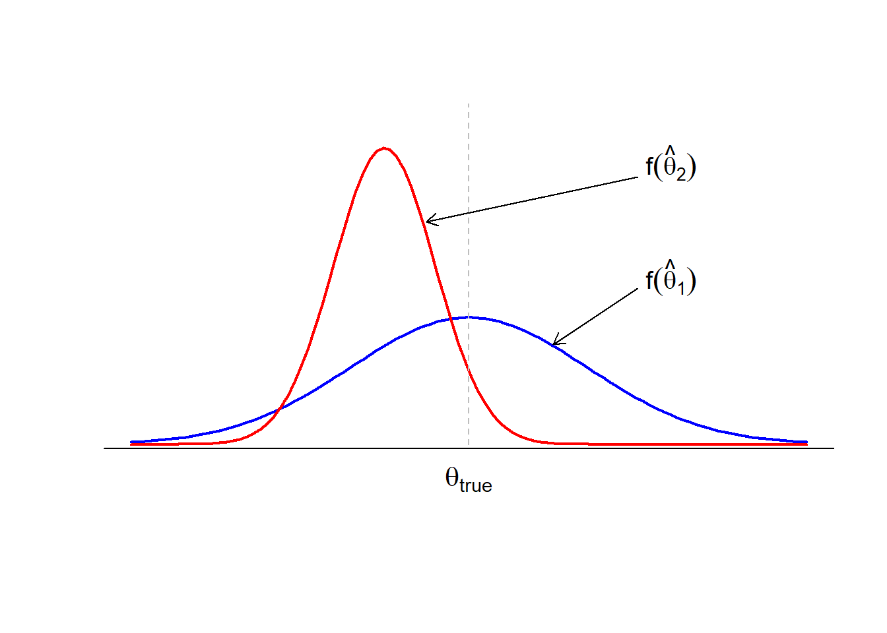

{kind=link}

2 Pendugaan (Bagian I)
Pendugaan Titik
Pendugaan Tak Bias
Bias
Varians dan Rataan Kuadrat
Faktorisasi
Kecukupan
Metode Momen
Gambaran Umum
Pelajaran ini memperkenalkan konsep-konsep mendasar pendugaan titik, yang merupakan salah satu landasan inferensi statistik. Anda akan mempelajari cara menduga parameter populasi yang tidak diketahui, seperti rataan dan proporsi, dengan menggunakan data sampel. Melalui pelajaran ini, Anda akan mengembangkan keterampilan untuk menghitung nilai dugaan kemungkinan maksimum bagi berbagai model berparameter tunggal serta mengevaluasi kualitas penduga berdasarkan sifat-sifat utama seperti bias, varians, dan rataan kuadrat galat. Contoh-contoh praktis, termasuk menduga cakupan asuransi kesehatan di kalangan mahasiswa dan menganalisis tingkat kematian akibat COVID-19, akan mengilustrasikan konsep-konsep tersebut. Pada akhir pelajaran ini, Anda akan memiliki pemahaman yang kukuh tentang pendugaan titik dan siap mempelajari topik-topik lanjutan dalam pendugaan statistik.
Tujuan
Setelah menyelesaikan pelajaran ini, Anda diharapkan mampu:
- Menentukan distribusi penduga,
- Menghitung dan menafsirkan bias suatu penduga,
- Menghitung varians dan rataan kuadrat galat suatu penduga, serta
- Menggunakan sifat-sifat penduga untuk membandingkan dan mengidentifikasi penduga yang lebih baik berdasarkan kriteria tertentu.
2.1 Pendugaan Titik
Misalkan kita memiliki parameter populasi yang tidak diketahui, seperti rataan populasi \(\mu\) atau proporsi populasi \(p\), yang ingin kita duga. Sebagai contoh, misalkan kita ingin menduga:
- \(p\) = proporsi mahasiswa Amerika berusia 18–24 tahun yang memiliki asuransi kesehatan (proporsi ini tidak diketahui)
- \(\mu\) = rataan jumlah hari yang diperlukan pasien penyakit Alzheimer untuk mencapai tonggak tertentu (rataan ini tidak diketahui)
Dalam kedua kasus tersebut, tentu tidak mungkin kita menyurvei seluruh populasi. Artinya, kita tidak dapat menyurvei semua mahasiswa Amerika yang berusia antara 18 dan 24 tahun. Kita juga tidak dapat menyurvei semua pasien penyakit Alzheimer. Oleh karena itu, sewajarnya kita mengambil sampel acak dari populasi dan menggunakan data yang diperoleh untuk menduga nilai parameter populasi. Tentu saja, kita menginginkan nilai dugaan yang ‘baik’ dalam suatu pengertian.
Kita juga akan mempelajari cara menilai apakah suatu penduga titik ‘baik’. Kita akan melakukannya dengan mendefinisikan makna tak bias dan cukup bagi suatu penduga, menentukan varians penduga tersebut, serta rataan kuadrat galatnya.
Definisi dan Notasi
Kita akan mengawali pelajaran ini dengan beberapa definisi formal. Untuk itu, ingatlah bahwa kita menyatakan \(n\) peubah acak yang berasal dari suatu sampel acak dengan huruf kapital berindeks bawah:
\[X_1, X_2, \ldots, X_n\]
Nilai teramati yang bersesuaian dari suatu sampel acak tertentu kemudian dinyatakan dengan huruf kecil berindeks bawah:
\[x_1, x_2, \ldots, x_n\]
Def. 2.1 (Ruang Parameter) Rentang nilai yang mungkin dari parameter \(\theta\) disebut ruang parameter \(\Omega\) (huruf Yunani ‘omega’).
Contoh 2.1 Jika \(\mu\) menyatakan rataan indeks prestasi semua mahasiswa, maka ruang parameternya (dengan mengasumsikan skala penilaian 4 poin) adalah:
\[\Omega = \{\mu: 0 \le \mu \le 4\}\]
Jika \(p\) adalah proporsi mahasiswa yang merokok, maka ruang parameternya adalah:
\[\Omega = \{p: 0 \le p \le 1\}\]
2.1.1 Penduga Titik
Fungsi dari \(X_1, X_2, \ldots X_n\), yaitu statistik \(u(X_1, X_2, \ldots, X_n)\), yang digunakan untuk menduga \(\theta\) disebut penduga titik bagi \(\theta.\)
Contoh 2.2 Sebagai contoh, fungsi berikut:
\[\bar{X} = \frac{1}{n} \sum_{i=1}^n X_i\] merupakan penduga titik bagi rataan populasi \(\mu.\)
Ketika \(X_i = 0\) atau 1, fungsi berikut:
\[\hat{p} = \frac{1}{n} \sum_{i=1}^n X_i\]
merupakan penduga titik bagi proporsi populasi \(p.\)
Fungsi berikut:
\[S^2 = \frac{1}{n-1} \sum_{i=1}^n (X_i - \bar{X})^2\]
merupakan penduga titik bagi varians populasi \(\sigma^2.\)
2.1.2 Nilai Dugaan Titik
Fungsi \(u(x_1, x_2, \ldots, x_n)\) yang dihitung dari sekumpulan data merupakan suatu nilai dugaan titik teramati bagi \(\theta.\)
Contoh 2.3 Jika \(x_i\), \(i = 1, \ldots, 88\) adalah indeks prestasi yang teramati pada sampel 88 mahasiswa, maka
\[\bar{x} = \frac{1}{88} \sum_{i=1}^{88} x_i = 3.12\] merupakan nilai dugaan titik bagi \(\mu\), yaitu rataan indeks prestasi semua mahasiswa dalam populasi.
Ingatlah kembali bahwa fungsi kepadatan peluang (PDF) ataupun fungsi massa peluang (PMF) dari suatu peubah acak telah didefinisikan sebagai \(f(x).\) Kita mendefinisikan model peluang untuk data sebagai berikut:
\[x_i \sim f_x(x_i|\theta)\]
dengan \(f_x\) merupakan distribusi peluang dan \(\theta\) merupakan satu atau beberapa parameter dalam model tersebut.
Jika \(\theta\) diketahui, tugas kita selesai. Tujuan mata kuliah ini adalah memahami apa yang harus dilakukan ketika \(\theta\) tidak diketahui. Kita mendefinisikan penduga bagi \(\theta\) sebagai \(\hat{\theta}.\) \(\hat{\theta}\) merupakan fungsi dari data kita, yaitu \(\hat{\theta} = g(X_1, X_2, \ldots, X_n).\) Kita akan menggunakan fungsi data ini untuk membantu kita memahami \(\theta.\) Kita akan melakukan inferensi statistik. Inferensi Statistik adalah penggunaan data untuk menyimpulkan sifat-sifat suatu distribusi yang mendasarinya.
Mari kita bahas sebuah contoh motivasi yang menggunakan beberapa istilah tersebut dan menunjukkan arah pembahasan kita.
Contoh 2.4 Misalkan seorang peneliti tertarik pada COVID-19. Gunakan notasi - \(n_{c,y} =\) jumlah orang yang terjangkit COVID-19 di negara \(c\) dan pada tahun \(y\) - \(d_{c,y} =\) jumlah orang yang meninggal akibat COVID-19 di negara \(c\) dan pada tahun \(y\)
Sebagai contoh, \(n_{\text{USA}, 2021}\) adalah jumlah orang yang terjangkit COVID-19 di Amerika Serikat pada tahun 2021.
Misalkan kita ingin menjawab apakah tingkat kematian akibat COVID-19 pada 2022 (setelah vaksin tersedia) lebih rendah daripada pada 2021 (sebelum vaksin tersedia) untuk suatu negara tertentu. Kita perlu mendefinisikan model peluang bagi \((n_{c,y}, d_{c,y}).\) Misalkan modelnya adalah:
\[d_{c,y} \sim \text{Bin}(n_{c,y}, p_y)\]
Dalam model ini, parameternya adalah \(p_y\), yaitu peluang kematian akibat COVID-19 pada tahun \(y.\) Karena kita ingin membandingkan 2022 dan 2021, kita memiliki dua parameter, \(p_{2021}\) dan \(p_{2022}.\) Jika parameter-parameter tersebut diketahui, kita dapat menjawab pertanyaan itu. Karena tidak diketahui, kita perlu menduga \(\theta = (p_{2021}, p_{2022}).\)
Lalu bagaimana? Apa itu \(\hat{\theta}\)? Bagaimana kita menentukan penduganya? Mungkinkah terdapat lebih dari satu penduga? Sebentar lagi kita akan mempelajari cara menemukan penduga bagi parameter yang tidak diketahui. Untuk saat ini, kita akan mempelajari cara membandingkan penduga.
2.2 Sifat-Sifat Penduga
Misalkan kita diberikan beberapa penduga bagi suatu parameter yang tidak diketahui, \(\theta.\) Bagaimana kita mengetahui pilihan yang ‘lebih baik’? Perhatikan contoh berikut.
Contoh 2.5 Misalkan kita memiliki sampel yang bebas dan berdistribusi identik (i.i.d.) berukuran \(n=3\) sedemikian sehingga
\[X_i \overset{iid}{\sim} \text{Bin}(10, p)\]
Parameter yang tidak diketahui dalam kasus ini adalah \(p\), yaitu peluang keberhasilan. Definisikan tiga penduga yang mungkin bagi \(p\) sebagai berikut:
\[\begin{aligned} \hat{p}_1 = \frac{X_1}{10} \\ \hat{p}_2 = \frac{\frac{X_1}{10} + \frac{X_2}{10} + \frac{X_3}{10}}{3} = \frac{X_1 + X_2 + X_3}{30} \\ \hat{p}_3 = \hat{p}_2 + 0.1 = \frac{X_1 + X_2 + X_3}{30} + 0.1 \end{aligned}\]
Penduga manakah yang lebih baik dalam menduga \(p\)? Kita dapat memulainya dengan mendefinisikan bias suatu penduga.
Def. 2.2 (Pendugaan Tak Bias) Salah satu ukuran bagi penduga yang “baik” adalah “ketakbiasan”. Suatu penduga dikatakan tak bias jika nilai harapan penduga tersebut sama dengan parameter yang tidak diketahui \(\theta.\)
2.2.1 Bias
Jika persamaan berikut berlaku:
\[E\left[u(X_1, X_2, \ldots, X_n)\right] = \theta\]
maka statistik \(u(X_1, X_2, \ldots, X_n)\) merupakan penduga tak bias bagi parameter \(\theta.\) Jika tidak, \(u(X_1, X_2, \ldots, X_n)\) merupakan penduga berbias bagi \(\theta.\) Besarnya bias statistik tersebut didefinisikan sebagai:
\[\text{Bias} = E(u(X_1, X_2, \ldots, X_n)) - \theta\] Perhatikan bahwa penduga tak bias akan memiliki bias sebesar \(\text{Bias} = E(u(X_1, X_2, \ldots, X_n)) - \theta = 0.\)
Contoh 2.6 Tinjau contoh sebelumnya. Dalam contoh tersebut, penduga-penduga bagi \(p\) didefinisikan sebagai berikut:
\[\begin{aligned} & \hat{p}_1 = \frac{X_1}{10} \\ & \hat{p}_2 = \frac{X_1 + X_2 + X_3}{30} \\ & \hat{p}_3 = \hat{p}_2 + 0.1 = \frac{X_1 + X_2 + X_3}{30} + 0.1 \end{aligned}\]
Berapakah bias masing-masing penduga?
Penyelesaian
Untuk menentukan bias setiap penduga, kita perlu menentukan nilai harapannya. Ingat bahwa untuk peubah acak binomial, \(X\), kita ketahui bahwa \(E(X) = np\) dan \(\text{Var}(X) = np(1-p).\) Mari kita mulai dengan \(\hat{p}_1.\)
\[\begin{align} \text{Bias}_1 &= E(\hat{p}_1)-p = E\left[\frac{X_1}{10}\right]-p = 0\\ \text{Bias}_2 &= E(\hat{p}_2)-p = E\left[\frac{X_1+X_2+X_3}{30}\right]-p = 0\\ \text{Bias}_3 &= E(\hat{p}_3)-p = E(\hat{p}_2+0.1)-p = 0.1 \end{align}\]
Contoh 2.7 Jika \(X_i\) merupakan peubah-peubah acak yang berdistribusi normal dengan rataan \(\mu\) dan varians \(\sigma^2\), tinjaulah kedua penduga bagi \(\mu\) dan \(\sigma^2\), secara berturut-turut:
\[\begin{align*} \hat{\mu} &= \frac{1}{n}\sum_{i=1}^n X_i, \\ \quad \hat{\sigma}^2 &= \frac{\sum_{i=1}^n(X_i - \bar{X})^2}{n} \end{align*}\]Apakah kedua penduga tersebut tak bias bagi parameternya masing-masing?
Penyelesaian
Ingat bahwa jika \(X_i\) merupakan peubah acak yang berdistribusi normal dengan rataan \(\mu\) dan varians \(\sigma^2\), maka \(E(X_i) = \mu\) dan \(\text{Var}(X_i) = \sigma^2.\) Oleh karena itu,
\[\begin{align} E(\bar{X}) &= E\left(\frac{1}{n}\sum_{i=1}^n X_i\right)\\ &= \frac{1}{n}\sum_{i=1}^n E(X_i)\\ &= \frac{1}{n}\sum_{i=1}^n \mu\\ &= \frac{1}{n}(n\mu) = \mu \end{align}\]Kesamaan pertama berlaku karena kita hanya mengganti \(\bar{X}\) dengan definisinya. Kesamaan kedua berlaku berdasarkan sifat nilai harapan dari kombinasi linear. Kesamaan ketiga berlaku karena \(E(X_i) = \mu.\) Kesamaan keempat berlaku karena ketika nilai \(\mu\) dijumlahkan sebanyak \(n\) kali, hasilnya adalah \(n\mu.\) Tentu saja, kesamaan terakhir diperoleh melalui aljabar sederhana.
Singkatnya, telah kita tunjukkan bahwa \(E(\bar{X}) = \mu.\) Oleh karena itu, \(\hat{\mu}\) merupakan penduga tak bias bagi \(\mu.\) Sekarang, mari kita periksa penduga bagi \(\sigma^2.\) Penduganya adalah:
\[\begin{align*} \hat{\sigma}^2 = \frac{\sum_{i=1}^n (X_i - \bar{X})^2}{n} \end{align*}\]Rumus tersebut dapat ditulis ulang sebagai:
\[\begin{align*} \hat{\sigma}^2 = \left(\frac{1}{n}\sum_{i=1}^n {X_i}^2\right) - \bar{X}^2 \end{align*}\]karena
\[\begin{align*} \hat{\sigma}^2 &= \frac{1}{n}\sum_{i=1}^n (x_i-\bar{x})^2\\ &= \frac{1}{n}\sum_{i=1}^n\left(x_i^2-2x_i\bar{x}+\bar{x}^2\right)\\ &= \frac{1}{n}\sum_{i=1}^n x_i^2-\frac{2\bar{x}}{n}\sum_{i=1}^n x_i+\bar{x}^2\\ &= \frac{1}{n}\sum_{i=1}^n x_i^2-\bar{x}^2 \end{align*}\]Sekarang, tentukan nilai harapannya:
Ingat bahwa \(\sigma^2 = E(X^2) - \mu^2\) untuk suatu peubah acak \(X.\) Secara aljabar, dengan menyelesaikan persamaan terhadap \(E(X^2)\), diperoleh \(E(X^2) = \sigma^2 + \mu^2.\) Oleh karena itu,
Kesamaan kedua berlaku karena \(\text{Var}(\bar{X}) = \frac{\sigma^2}{n}\) dan \(E(\bar{X}) = \mu.\) Selanjutnya,
\[\begin{align*} E(\hat{\sigma}^2) &= \frac{1}{n}\sum_{i=1}^n (\sigma^2 + \mu^2) - \left(\frac{\sigma^2}{n} + \mu^2\right) \\&= \frac{1}{n}(n\sigma^2 + n\mu^2) - \frac{\sigma^2}{n} - \mu^2\\ &= \sigma^2 - \frac{\sigma^2}{n} \\&= \frac{n\sigma^2 - \sigma^2}{n} = \frac{(n-1)\sigma^2}{n} \end{align*}\]Dengan demikian, telah kita tunjukkan bahwa
\[\begin{align*} E(\hat{\sigma}^2) \ne \sigma^2 \end{align*}\]Statistik \(\hat{\sigma}^2\) merupakan penduga berbias bagi \(\sigma^2.\)
Contoh 2.8 Jika \(X_i\) merupakan peubah-peubah acak yang berdistribusi normal dengan rataan \(\mu\) dan varians \(\sigma^2\), apakah \(S^2 = \frac{\sum_{i=1}^n (X_i - \bar{X})^2}{n-1}\) merupakan penduga tak bias bagi \(\sigma^2\)?
Penyelesaian
Ingat bahwa jika \(X_i\) merupakan peubah acak yang berdistribusi normal dengan rataan \(\mu\) dan varians \(\sigma^2\), maka:
\[ \begin{align*} \frac{(n-1)S^2}{\sigma^2} \sim \chi^2_{n-1} \end{align*} \]
Selain itu, ingat bahwa nilai harapan peubah acak khi-kuadrat sama dengan derajat kebebasannya. Artinya, jika:
\[ \begin{align*} X \sim \chi^2_{(r)} \end{align*} \]
maka \(E(X) = r.\) Oleh karena itu,
\[ \begin{align*} E(S^2) &= E\left[\frac{\sigma^2}{n-1} \cdot \frac{(n-1)S^2}{\sigma^2}\right] \\&= \frac{\sigma^2}{n-1}E\left[\frac{(n-1)S^2}{\sigma^2}\right]\\ &= \frac{\sigma^2}{n-1}(n-1) \\&= \sigma^2 \end{align*} \]
Kesamaan pertama berlaku karena kita pada dasarnya mengalikan varians sampel dengan 1. Kesamaan kedua berlaku berdasarkan sifat nilai harapan yang menyatakan bahwa konstanta dapat dikeluarkan dari operasi nilai harapan. Kesamaan ketiga berlaku berdasarkan dua fakta yang diingat kembali di atas. Dengan kata lain:
\[ \begin{align*} E\left[\frac{(n-1)S^2}{\sigma^2}\right] = n-1 \end{align*} \]
Kesamaan terakhir sekali lagi diperoleh melalui aljabar sederhana.
Singkatnya, telah kita tunjukkan bahwa jika \(X_i\) merupakan peubah acak yang berdistribusi normal dengan rataan \(\mu\) dan varians \(\sigma^2\), maka \(S^2\) merupakan penduga tak bias bagi \(\sigma^2.\) Namun, ternyata \(S^2\) memang selalu merupakan penduga tak bias bagi \(\sigma^2\), yakni untuk setiap model, bukan hanya model normal. Menariknya, meskipun \(S^2\) selalu merupakan penduga tak bias bagi \(\sigma^2\), \(S\) ternyata bukan penduga tak bias bagi \(\sigma.\)
Selanjutnya, mari kita tinjau contoh dengan peubah acak yang tidak mengikuti distribusi bernama yang telah kita kenal.
Contoh 2.9 Misalkan \(Y_1, Y_2, \ldots, Y_n\) merupakan sampel acak berukuran \(n\) dari suatu distribusi dengan fungsi kepadatan peluang berikut:
\[ \begin{align*} f(y) = \frac{1}{\theta} y^{\frac{1-\theta}{\theta}}, \qquad 0 < y < 1, \;\; 0 < \theta \end{align*} \]
Tentukan apakah statistik \(\hat{\theta} = -\frac{1}{n} \sum_{i=1}^n \ln Y_i\) merupakan penduga tak bias bagi parameter yang tidak diketahui, \(\theta.\)
Penyelesaian
Kita dapat memulai dengan menggunakan sifat-sifat nilai harapan.
\[ \begin{align*} E(\hat{\theta}) = E\left(-\frac{1}{n}\sum_{i=1}^n \ln Y_i\right) = -\frac{1}{n}\sum_{i=1}^n E(\ln Y_i) \end{align*} \]
Karena sampel tersebut merupakan sampel acak, \(E(\ln Y_i)\) bernilai sama untuk semua \(i = 1, \ldots, n.\) Oleh karena itu, diperoleh:
\[ \begin{align*} E(\hat{\theta}) &= -\frac{1}{n}\sum_{i=1}^n E(\ln Y_i) \\&= -\frac{1}{n}(n)E(\ln Y_i) \\&= -E(\ln Y_i) \end{align*} \]
Oleh karena itu, kita hanya perlu menentukan \(E(\ln Y_i).\) Dengan menggunakan definisi nilai harapan, diperoleh:
\[ \begin{align*} E(\ln Y_i) = \int_0^1 \frac{\ln y}{\theta} y^{(1-\theta)/\theta} dy \end{align*} \]
Dengan menggunakan integrasi parsial, dengan \(u = \ln y\) dan \(dv = \frac{1}{\theta} y^{1/\theta-1} dy\), diperoleh
\[ \begin{align*} E(\ln Y_i) = \lim_{a \rightarrow 0} \left[ y^{1/\theta} \ln y - \theta y^{1/\theta} \right]_a^1 = -\theta \end{align*} \]
Dengan menggabungkan semua hasil tersebut, diperoleh:
\[ \begin{align*} E(\hat{\theta}) = -E(\ln Y_i) = -(-\theta) = \theta \end{align*} \]
Oleh karena itu, statistik tersebut merupakan penduga tak bias bagi \(\theta.\)
Wajar jika sifat tak bias dianggap sebagai sifat penduga yang diinginkan. Namun, seperti dalam contoh kita, bagaimana cara menentukan penduga yang “lebih baik” di antara beberapa penduga tak bias? Secara logis, kita perlu mempertimbangkan bukan hanya nilai harapan penduga, melainkan juga variansnya. Pada pelajaran berikutnya, kita akan membahas varians penduga serta rataan kuadrat galat.
2.2.2 Varians dan Rataan Kuadrat Galat
Pada bagian sebelumnya, kita mendefinisikan bias dan makna sifat tak bias suatu penduga bagi parameter yang tidak diketahui, \(\theta.\) Walaupun sifat tak bias merupakan sifat yang diinginkan, sifat itu saja belum mendefinisikan suatu “penduga yang baik”. Perhatikan contoh lemparan dart berikut yang menggambarkan perbedaan antara akurasi dan presisi.
Akurasi adalah istilah yang menunjukkan seberapa dekat suatu hasil dengan “nilai sebenarnya”. Bagi penduga, akurasi analog dengan sifat tak bias. Presisi adalah istilah yang menunjukkan seberapa dekat suatu hasil dengan hasil pengukuran lainnya. Bayangkan kita melempar dart ke papan sasaran, dengan pusat sasaran sebagai “nilai sebenarnya”. Misalkan empat orang masing-masing melempar empat dart dan kita ingin menilai siapa pemain dart yang “lebih baik” berdasarkan nilai sebenarnya. Hasil lemparan mereka ditunjukkan di bawah ini.
Mari kita telaah setiap pemain. Akurasi Pemain A rendah dan dart-nya tersebar. Pemain B tidak melempar dekat pusat sasaran, tetapi hasil lemparannya berdekatan satu sama lain. Oleh karena itu, akurasi Pemain B rendah, tetapi presisinya lebih baik. Pemain C tampaknya memiliki akurasi yang lebih tinggi daripada Pemain A dan B, tetapi presisinya buruk. Terakhir, Pemain D memiliki akurasi dan presisi yang tinggi. Berdasarkan gambar, saya akan menilai bahwa Pemain D adalah pemain yang lebih baik.
Tujuannya adalah memilih penduga yang akurat dan presisi. Kita telah membahas bahwa sifat tak bias analog dengan akurasi. Untuk menilai presisi suatu penduga, ukuran yang baik adalah varians penduga tersebut.
Contoh 2.10 Perhatikan kembali contoh sebelumnya yang memiliki tiga calon penduga:
\[ \begin{align*} &\hat{p}_1 = \frac{X_1}{10}\\ &\hat{p}_2 = \frac{X_1 + X_2 + X_3}{30}\\ &\hat{p}_3 = \hat{p}_2 + 0.1 \end{align*} \]
dengan \(X_i \overset{iid}{\sim} \text{Bin}(10, p).\) Dari pembahasan sebelumnya, diketahui bahwa baik \(\hat{p}_1\) maupun \(\hat{p}_2\) merupakan penduga tak bias bagi \(p\), sedangkan \(\hat{p}_3\) merupakan penduga yang bias. Tentukan varians setiap penduga.
Penyelesaian
Untuk menentukan varians setiap penduga, kita perlu mengingat tiga aturan dari STAT 414: - Untuk peubah acak binomial \(X\), \(\text{Var}(X) = np(1-p).\) - \(\text{Var}(aX+b) = a^2 \text{Var}(X)\) untuk peubah acak \(X.\) - Jika peubah acak \(X\) dan \(Y\) saling bebas, maka \(\text{Var}(X+Y) = \text{Var}(X) + \text{Var}(Y).\)
Sekarang, mari kita tentukan varians \(\hat{p}_1\): \[ \begin{align*} \text{Var}(\hat{p}_1) &= \text{Var}\left(\frac{X_1}{10}\right)\\ &= \left(\frac{1}{10}\right)^2 \text{Var}(X_1)\\& = \frac{10p(1-p)}{100} \\&= \frac{p(1-p)}{10} \end{align*} \]
Berikutnya, tentukan varians \(\hat{p}_2\): \[ \begin{align*} \text{Var}(\hat{p}_2) &= \text{Var}\left(\frac{X_1 + X_2 + X_3}{30}\right)\\& = \frac{1}{30^2} \text{Var}(X_1 + X_2 + X_3) \\ &= \frac{\text{Var}(X_1) + \text{Var}(X_2) + \text{Var}(X_3)}{30^2} \\&= \frac{10p(1-p) + 10p(1-p) + 10p(1-p)}{30^2} \\ &= \frac{30p(1-p)}{30^2}= \frac{p(1-p)}{30} \end{align*} \]
Terakhir, tentukan varians \(\hat{p}_3\): \[ \begin{align*} \text{Var}(\hat{p}_3) &= \text{Var}(\hat{p}_2 + 0.1) = \text{Var}(\hat{p}_2) = \frac{p(1-p)}{30} \end{align*} \]
Jadi, diperoleh bahwa baik \(\hat{p}_1\) maupun \(\hat{p}_2\) merupakan penduga tak bias. Di atas, juga diperoleh bahwa \(\text{Var}(\hat{p}_1)>\text{Var}(\hat{p}_2).\) Berdasarkan dua sifat penduga yang telah kita pelajari sejauh ini, tampaknya \(\hat{p}_2\) merupakan penduga yang lebih baik.
Dalam contoh di atas, kita memilih penduga tak bias dengan varians terkecil. Apakah kita akan pernah menggunakan penduga yang bias? Jika ya, mengapa?
Dalam keadaan tertentu, varians dapat dikurangi secara drastis dengan memasukkan sedikit bias. Sebagai contoh, perhatikan dua penduga, \(\hat{\theta}_1\) dan \(\hat{\theta}_2.\) Perhatikan grafik fungsi kepadatan peluang (PDF) kedua penduga tersebut.
Terlihat bahwa fungsi kepadatan peluang (PDF) dari \(\hat{\theta}_1\) berpusat di sekitar nilai sebenarnya, yaitu \(\theta.\) Namun, \(\hat{\theta}_1\) memiliki varians yang lebih besar. Namun, \(\hat{\theta}_2\) tidak berpusat di sekitar nilai sebenarnya, tetapi memiliki varians yang jauh lebih kecil.
Contoh 2.11 Perhatikan kembali contoh sebelumnya, yaitu sampel acak berukuran \(n\) dari distribusi normal dengan rataan \(\mu\) dan varians \(\sigma^2.\) Telah ditunjukkan bahwa
\[\begin{align*} \hat{\sigma}^2_1=\frac{\sum_{i=1}^n (X_i-\bar{X})^2}{n} \end{align*}\]
merupakan penduga yang bias bagi \(\sigma^2.\) Kita juga memperoleh bahwa
\[\begin{align*} \hat{\sigma^2}_2=\frac{\sum_{i=1}^n(X_i-\bar{X})^2}{n-1} \end{align*}\]
merupakan penduga tak bias. Kita memperoleh bahwa:
\[\begin{align*} E(\hat{\sigma^2}_1)=\frac{n-1}{n}\sigma^2 \end{align*}\]
Namun, ketika \(n\) menuju tak hingga, nilai harapannya menuju \(\sigma^2.\) Oleh karena itu, \(\hat{\sigma}^2_1\) bersifat tak bias secara asimtotik. Oleh karena itu, ketika ukuran sampel makin besar, bias penduga dapat menuju 0.
Adakah ukuran yang dapat membantu kita menemukan keseimbangan yang baik antara bias penduga dan variansnya? Jawabannya ada. Salah satu ukuran tersebut adalah rataan kuadrat galat (MSE).
Def. 2.3 (Rataan Kuadrat Galat bagi Penduga Titik \(\hat{\theta}\)) Nilai rataan kuadrat galat dari suatu penduga titik \(\hat{\theta}\) didefinisikan sebagai
\[\begin{align*} \text{MSE}(\hat{\theta})=E\left[(\hat{\theta}-\theta)^2\right] \end{align*}\]
Rataan kuadrat galat suatu penduga adalah rataan kuadrat jarak antara penduga dan parameter sebenarnya, \(\theta.\)
Berdasarkan definisi MSE, jelas bahwa penduga yang diinginkan memiliki rataan kuadrat galat terkecil.
Rataan kuadrat galat \(\hat{\theta}\), sebagai ukuran bagi suatu penduga, merupakan fungsi dari bias dan variansnya. Dapat ditunjukkan bahwa
\[\begin{align*} \text{MSE}(\hat{\theta})=\text{Var}(\hat{\theta})+\left[\text{Bias}(\hat{\theta})\right]^2 \end{align*}\]
dengan \(\text{Bias}(\hat{\theta})\) merupakan bias dari \(\hat{\theta}.\) Pastikan sendiri bahwa hubungan di atas berlaku. Hubungan tersebut mungkin ditanyakan dalam tugas.
Contoh 2.12 Perhatikan kembali contoh sebelumnya dengan tiga penduga berikut untuk parameter binomial \(p\), dengan \(n=10.\) Penduga-penduganya adalah: \[\begin{align*} & \hat{p}_1=\frac{X_1}{10}\\ & \hat{p}_2=\frac{X_1+X_2+X_3}{30}\\ & \hat{p}_3=\hat{p}_2+0.1 \end{align*}\] Tentukan MSE setiap penduga.
Penyelesaian
Sebelumnya, kita telah memperoleh varians dan nilai harapan setiap penduga. Hasilnya diringkas di sini untuk memudahkan.
\[\begin{align*} & E(\hat{p}_1)=p, \qquad \text{Var}(\hat{p}_1)=\frac{p(1-p)}{10}\\ & E(\hat{p}_2)=p, \qquad \text{Var}(\hat{p}_2)=\frac{p(1-p)}{30}\\ & E(\hat{p}_3)=p+0.1, \qquad \text{Var}(\hat{p}_3)=\frac{p(1-p)}{30}\\ \end{align*} \]
Untuk menentukan rataan kuadrat galat, kita perlu menentukan bias setiap penduga.
\[\begin{align*} & \text{Bias}(\hat{p}_1)=E(\hat{p}_1)-p=0\\ & \text{Bias}(\hat{p}_2)=E(\hat{p}_2)-p=0\\ & \text{Bias}(\hat{p}_3)=E(\hat{p}_3)-p=p+0.1-p=0.1\\ \end{align*}\]
Dengan demikian, nilai MSE masing-masing adalah:
\[\begin{align*} & MSE(\hat{p}_1)=\text{Var}(\hat{p}_1)+\left[\text{Bias}(\hat{p}_1)\right]^2=\frac{p(1-p)}{10}\\ & MSE(\hat{p}_2)=\text{Var}(\hat{p}_2)+\left[\text{Bias}(\hat{p}_2)\right]^2=\frac{p(1-p)}{30}\\ & MSE(\hat{p}_3)=\text{Var}(\hat{p}_3)+\left[\text{Bias}(\hat{p}_3)\right]^2=\frac{p(1-p)}{30}+0.1^2=\frac{p(1-p)}{30}+0.01\\ \end{align*}\]
Dengan demikian, penduga dengan MSE terkecil adalah \(\hat{p}_2.\)
Pada pelajaran berikutnya, kita akan membahas sifat lain yang diinginkan dari suatu penduga, yaitu kecukupan.
2.3 Ringkasan
Pelajaran ini memperkenalkan gagasan penggunaan data sampel untuk menduga parameter populasi yang tidak diketahui. Fokus kita adalah pada pendugaan titik dan menelaah hal-hal yang membuat suatu penduga diinginkan dengan mengkaji bias, varians, dan rataan kuadrat galat (MSE). Melalui contoh dan penurunan, kita mempelajari cara mengevaluasi dan membandingkan penduga dengan menggunakan sifat-sifat tersebut. Pelajaran ini membangun landasan untuk menilai kualitas penduga, baik dalam konteks teoretis maupun terapan.
Pokok-Pokok Penting
- Bias mengukur seberapa jauh rataan suatu penduga dari parameter sebenarnya.
- Varians mencerminkan keragaman nilai suatu penduga di berbagai sampel.
- Rataan Kuadrat Galat (MSE) menggabungkan bias dan varians untuk menilai akurasi secara keseluruhan.
Membandingkan MSE membantu menentukan penduga mana yang lebih baik dalam praktik.